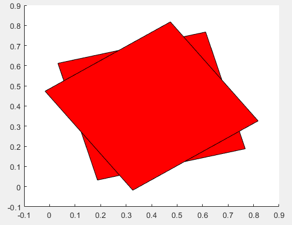

arguments
Declare function argument validation
Syntax
arguments
argName1 (dimensions) class {validators} = defaultValue
...
argNameN ...
end
arguments (Repeating)
argName1 (dimensions) class {validators}
...
argNameN ...
end
arguments (Output)
argName1 (dimensions) class {validators}
...
argNameN ...
end
arguments (Output,Repeating)
argName (dimensions) class {validators}
end
Description
Input Argument Blocks
arguments ... end declares input arguments for a function. The
arguments block is optional. If you include one or more arguments
blocks, they must appear before the first executable line of the function. MATLAB® treats any argument block that is not labeled explicitly with
Input or Output as an input block.
Each argument can have one or more restrictions or a default value, as shown in this syntax:
argName (dimensions) class {validators} =
defaultValue
(dimensions)(1,2),(3,5,2), or(1,:). A colon allows any length in that dimension.(dimensions)The dimensions of the input must match
(dimensions)(dimensions)(1,:)specifies the input must be a 1-by-n row vector, but an n-by-1 column vector is compatible. The function reshapes a row vector input into a column vector. Similarly, a size of(2,3)allows scalar input, but it expands the input to a 2-by-3 matrix. See Validate Size and Class for more information.classdouble. The input must be the specified type or a type that can be converted to that type. For example, a function that specifiesdoubleaccepts values of classsingleand converts them todouble. For more information on conversions, see Implicit Class Conversion.{validators}mustBeNumericandmustBeScalarOrEmpty, enclosed in curly brackets. Validation functions error when the input arguments do not match their conditions. UnlikeclassdefaultValueargumentsblock.
For name-value arguments, argnv.namenvnameoptions.
y = myFunction(x,options)
In the arguments block, specify the names for name-value arguments as fields:
arguments
x
options.Name1
options.Name2
end For more information on using arguments blocks in general, see
arguments Block Syntax.
arguments (Repeating) ... end declares repeating input
arguments.
For example, if you create a function named myplot with repeating
arguments X, Y, and style, the
function accepts multiple sets of these three arguments, such as
myplot(x1,y1,style1,x2,y2,style2). MATLAB creates a cell array that contains all the values passed in for that
argument.
Functions can include only one repeating input arguments block. If the function includes both repeating and name-value arguments, declare name-value arguments in their own, separate arguments block after the repeating arguments block.
For more information on using validation with repeating arguments, see Validate Repeating Arguments.
Output Argument Blocks
arguments (Output) ... end declares output arguments for a
function. The output arguments block is optional. If you include one or more output
arguments blocks, they must appear after all input blocks but before
the first executable line of the function. When including both input and output blocks in
a function, including the (Input) and (Output)
attributes explicitly is recommended for readability. See Repeating Outputs with Argument Validation for an example.
(since R2022b)
Like input arguments, output arguments can have one or more restrictions, as shown in this syntax:
argName (dimensions) class
{validators}
See the description for arguments ... end for additional details.
Unlike input arguments, output arguments cannot define a default value, and validation
functions applied to an output argument cannot reference an earlier output
argument.
arguments (Output,Repeating) ... end declares a repeating output
argument for a function. You can use argument validation for a repeating output argument,
but you can define only one repeating output argument per function.
varargout can appear in a repeating output arguments block as long
as it is the only output argument. (since R2022b)
Examples
Write a function that restricts the size of the input argument to a row vector of any length. Use a validation function to restrict the elements of that vector to numeric values.
function [m,s] = twoStats(x) arguments x (1,:) {mustBeNumeric} end m = mean(x,"all"); s = std(x,1,"all"); end
Call the function on a three-element row vector.
a = [1 3 5]; [m,s] = twoStats(a)
m =
3
s =
1.6330Calling the function with a column vector is also valid because row and column vectors are compatible.
a = [1 3 5]'; [m,s] = twoStats(a)
m =
3
s =
1.6330If you call the function with a vector that contains nonnumeric values, the
mustBeNumeric validation function throws an error.
a = ["1" "3" "5"]; [m,s] = twoStats(a)
Error using twoStats Invalid argument at position 1. Value must be numeric.
To declare optional name-value arguments for a function, include a structure name in
the function declaration, and define the argument names as fields of that structure in the
arguments block.
Declare the myRectangle function with
options as a structure name. The two fields of
options, LineStyle and
LineWidth, are the names in the function’s name-value
arguments:
function myRectangle(X,Y,options) arguments X double Y double options.LineStyle (1,1) string = "-" options.LineWidth (1,1) {mustBeNumeric} = 1 end % Function code ... end
Both of the argument names have defined default values, so they are both optional. All of these syntaxes are valid ways to call the function:
myRectangle(4,5) myRectangle(4,5,LineStyle=":",LineWidth=2) myRectangle(4,5,LineWidth=2,LineStyle=":") myRectangle(4,5,LineStyle=":") myRectangle(4,5,LineWidth=2)
Before R2021a, pass names as strings or character vectors, and separate names and values with commas. Both syntaxes are valid in later releases.
Repeating arguments are single arguments or groups of arguments that can be repeated
zero or more times in a function call. The fRepeat function accepts
repeating groups of arguments x, y, and
style. Restrict the input arguments x and
y to vectors of double values or values convertible to doubles.
Restrict style to the strings "--" and
":".
function fRepeat(x,y,style) arguments (Repeating) x (1,:) double y (1,:) double style {mustBeMember(style,["--",":"])} end % Reshape the cell arrays of inputs and call plot function z = reshape([x;y;style],1,[]); if ~isempty(z) plot(z{:}); end end
Call fRepeat with two groups of inputs. MATLAB creates a cell array containing all the values passed in for
x, another array for the values of y, and a
third for the values of style. The function then reshapes those
arrays into a 1-by-6 cell array, z, and passes it to
plot.
x1 = 1:10; y1 = 1:10; s1 = ":"; x2 = 1:7; y2 = 1:1.5:10; s2 = "--"; fRepeat(x1,y1,s1,x2,y2,s2)

Write a function that rotates a two-dimensional square patch about point (0.4, 0.4) by a user-specified number of degrees. Return x- and y-coordinates of the final image as output arguments, and restrict those values to be positive. In other words, the function should return coordinates only when the final result of the rotation is entirely in the first quadrant.
function [xfinal,yfinal] = rotatePatch(angle) arguments (Output) xfinal {mustBePositive} yfinal {mustBePositive} end x = [0.1 0.1 0.7 0.7]; y = [0.1 0.7 0.7 0.1]; p = patch(x,y,"red"); rotate(p,[0 0 1],angle,[0.4 0.4 0]) xfinal = p.Vertices(:,1); yfinal = p.Vertices(:,2); end
Call the function with an angle of 15 degrees. This rotation does not move any of the vertices out of the first quadrant, so the function returns without error.
[x1,y1] = rotatePatch(15)
x1 =
0.1879
0.0326
0.6121
0.7674
y1 =
0.0326
0.6121
0.7674
0.1879
Call the function with an angle of 35 degrees, which moves the lower-left vertex out of the first quadrant. The negative x-coordinate does not satisfy the output argument validation, so the function returns an error.
[x2,y2] = rotatePatch(35)
Invalid output 'xfinal'. Value must be positive. Error in rotatePatch (line 12) end

Write a function that accepts repeating pairs of vectors and returns the sum of each pair. Restrict the inputs and outputs to row vectors.
function vectorSum = repeatSum(a,b) arguments (Input,Repeating) a (1,:) b (1,:) end arguments (Output,Repeating) vectorSum (1,:) end n = numel(a); vectorSum{n} = a{n} + b{n}; for i = 1:n-1 vectorSum{i} = a{i} + b{i}; end end
Calculating the final output and assigning it to vectorSum{n}
before the for-loop preallocates space for the cell array. Expanding
the cell array in the loop without preallocation can have a negative effect on
performance.
Define two pairs of vectors. Call repeatSum on with the two
pairs as input. The input arguments block validation converts column vectors to row
vectors because they are compatible sizes.
x1 = [1 2]; y1 = [3 4]; x2 = [1; 0]; y2 = [0; 1]; [sum1,sum2] = repeatSum(x1,y1,x2,y2)
sum1 =
4 6
sum2 =
1 1Because the inputs are restricted to row vectors, the sum of each pair of vectors is
always a row vector. However, the output validation helps ensure that the function
produces row vectors even if the function is revised at a later date. For example, if
the input validation were changed to the mustBeVector function,
pairs could be composed of one row vector and one column vector without conversion. In
that case, the sum of x1 and y2 is a
matrix.
x1 + y2
ans =
1 2
2 3
The output of the revised repeatSum would error because the
matrix would not pass the output validation.
Limitations
Argument blocks are not supported in nested functions, abstract methods, or handle class destructor methods.
More About
Tips
Using data type restrictions can result in implicit conversions of input arguments. For example:
For this function, if you pass the stringfunction y = myFunction(inputArg1) arguments inputArg1 (1,1) double end ..."123"as the input argument, MATLAB converts the string to the numeric value123of typedouble.Validation functions do not change input values in any way, so to avoid data type conversion, use one or more validator functions instead of a data type to restrict the input. For example:
To avoid conversion of strings to numeric values, use
mustBeA,mustBeFloat, ormustBeNumeric.To avoid conversion of numeric values to strings, use
mustBeText,mustBeTextScalar, ormustBeNonZeroLengthText.To avoid size conversions, use
mustBeVectorormustBeScalarOrEmpty.
MATLAB is able to provide code completions and suggestions for functions with
argumentsblocks based on the information contained in the arguments block. This information is available without requiring afunctionSignatures.jsonfile. For more information on customizing code suggestions and completions see, Customize Code Suggestions and Completions.